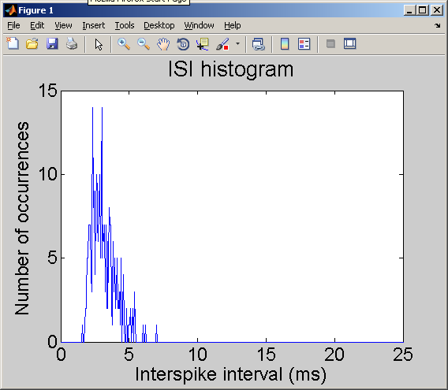

ReadMe File for Matlab code that accompanies:
JH Goldwyn, JT Rubinstein, E Shea-Brown (2012). A point process
framework for modeling electrical stimulation of the auditory nerve
Contents:
* Current.m -- Defines a vector of (time-varying) electric current
values used as input to the point process model
* Parameterize.m -- Runs the parameterization routine described by
Goldwyn et al. to compute the (unique) model
parameter values associated with five response
statistics provided by the user (Relative
Spread, Chronaxie, Summation Time Constant,
Threshold, Jitter)
* RunPointProcess.m -- Simulates the point process model described by
Goldwyn et al. User can define current input
and model parameters through Current.m and
Parameterize.m. Output of this script is the
total number of spikes (SpikeCount), a vector
of the sequence of spike times (SpikeTrain),
and a histogram of interspike intervals.
INSTRUCTIONS
Execute RunPointProcess.m at the Matlab command line by typing
"RunPointProcess" and you should see a figure like:

This default run corresponds to the parameters in Table 1 and has the
same parameters as used throughout the manuscript.
Make desired changes to parameter values in the script. Modify the
current input by altering the function Current.m